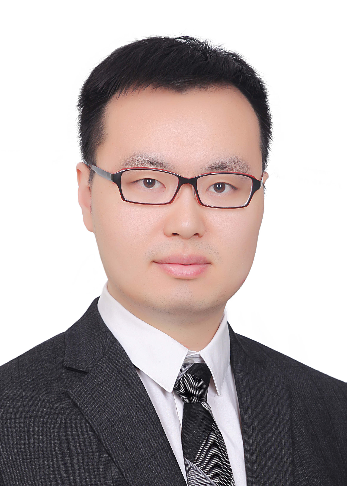

|
 |
Jian Zhao, Ph.D.E-mail: JavaScript required |
Jian Zhao (S’14, M’17, SM’21) received his Ph.D. in Mechanical Engineering from Nanjing University of Science and Technology, China, in 2017. He then joined the Department of Electronic Engineering at Tsinghua University as a Postdoctoral Researcher. He is currently a Professor at the School of Integrated Circuits, Shanghai Jiao Tong University.
His research interests include sensory readout circuits, biomedical systems, and bio-inspired systems. He has authored over 70 technical papers and 2 book chapters, and was a recipient of the BioCAS Young Professional Top Contributor Award.
He has served as an Associate Editor for IEEE Transactions on Biomedical Circuits and Systems (TBioCAS) and IEEE Transactions on Circuits and Systems I: Regular Papers (TCAS-I). He is a Co-founder and past Chair of the IEEE Shanghai Section Young Professional Affinity Group, and serves as an IEEE CASS Distinguished Lecturer.